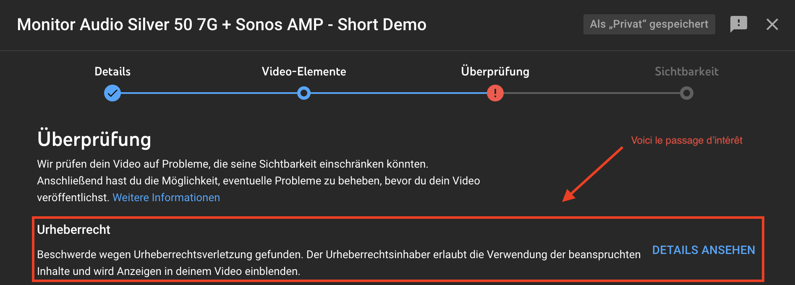

Chapter 3 Youtube
3.1 Allgmein nützliche Tricks
3.1.1 Make a Link directly to the relevant part of a Youtube-Video
- You simply need to copy a full youtube-video-link and add the suffix
&t=3m45s. This is just an example, you can put in any minutes or seconds.
3.2 Video-Bearbeitungs-Software
- Free to use: Davinci Resolve
- Kostenpflichtig: Final Cut Pro
3.3 Copy-Right
3.3.1 Übersicht Regeln zu Copy-Right mit fremder Musik im Video
Pendant que je mettais la vidéo de la Monitor 50 7G sur Youtube, l’algorithme de Youtube m’a de nouveau donné un avertissement de violation de „copy-right“ à cause des morceaux de musiques qu’on utilise (voir la capture).

Example of a Youtube Copy-Right Claim, which has no consequences for your Channel
Ces avertissements sont sans conséquences juridiques pour nous & nos vidéos, puisque le „copy right“ permet juste de mettre à l’auteur du morceaux de musique des pubs sur nos vidéos: donc de s’enrichir avec notre travail de présentation (surtout la maison de disque derrière tout cela).
- Hier ein genereller Überblick der Regeln, bei der Verwendung fremder Musik in einem Youtube-Video: Linzenzfreie Musik für Youtube-Videos
3.3.2 Avoid Copy-Right when using Screenshots in a Video
- Trick: make a screenshot from someone else’s Youtube-Video that took the original screenshot himself!